40 سؤال
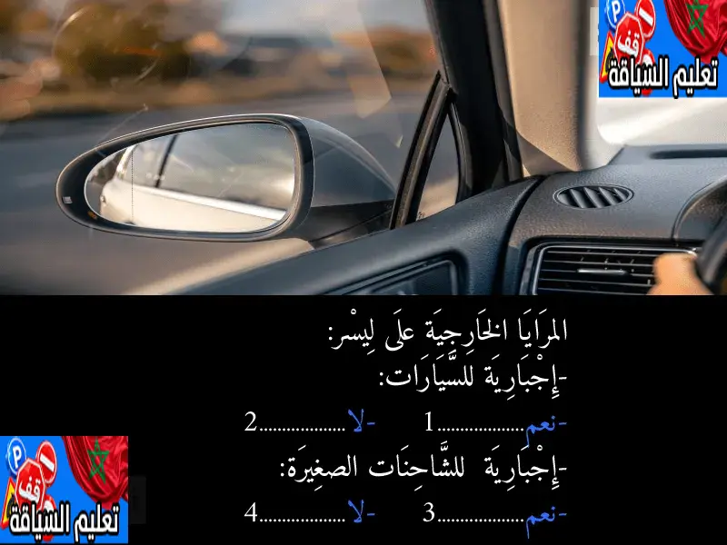
الجواب الصحيح: 1 و 3
المرايا الخارجية على اليسار إجبارية لكل أنواع السيارات والشاحنات الصغيرة لأنها كتساعد السائق يشوف الطريق والجوانب بوضوح ويجنب الحوادث. كذلك، المرايا على اليمين مهمة جداً باش تكمل رؤية السائق وتعطيه رؤية شاملة لمحيطه، مما يساهم في تغيير المسار والتجاوز بأمان. إذن، وجود المرايا الخارجية على اليسار واليمين ضروري لضمان السلامة فالطريق. الجواب الصحيح هو رقم 1 و 3.
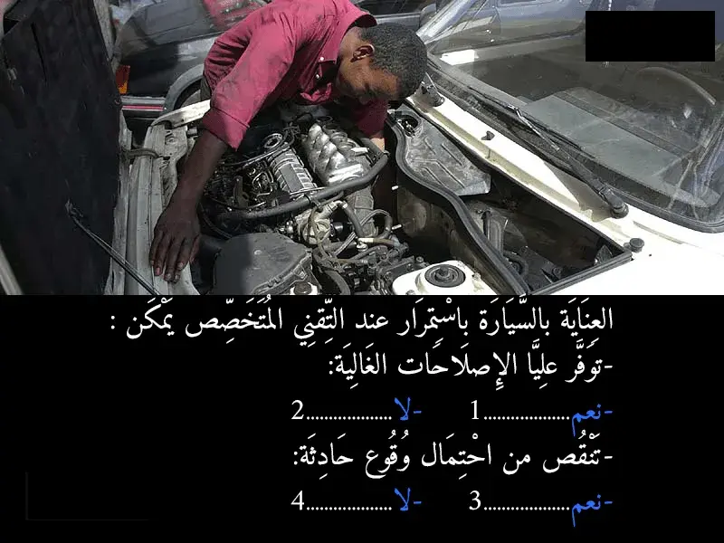
الجواب الصحيح: 1 و 3
العناية بالسيارة عند التقني المتخصص بانتظام كتوفر عليك الإصلاحات الغالية لأنها كتساعد في اكتشاف الأعطاب الصغيرة قبل ما تكبر وتولي مشاكل كبيرة. كتحافظ أيضا على السلامة ديالك حيث كتقلل من احتمال وقوع الحوادث بفضل الصيانة المستمرة والتأكد من سلامة جميع أجزاء السيارة. الجواب الصحيح هو رقم 1 و 3.
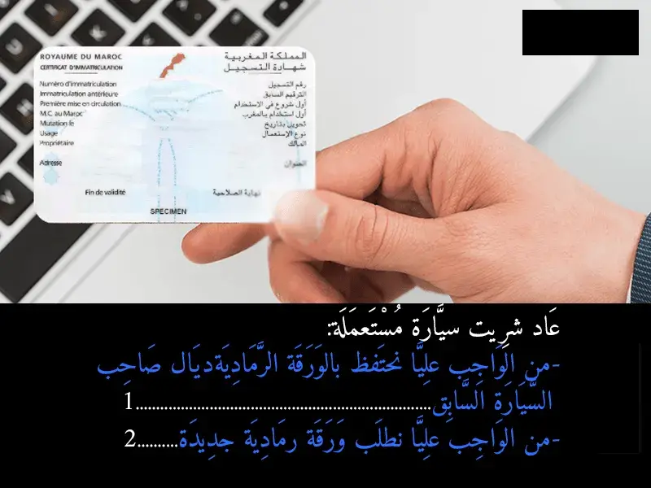
الجواب الصحيح: 2
في حالة تغيير مالك مركبة او مايعرف كذلك بتفويت ملكية مركبة مستعملة مسجلة في السلسة العادية بالمغرب يجب ان أقوم بطلب ورقة رمادية جديدة لانه السيارة التي قمت بشرائها أنا الان مالكها. يتم تجديد شهادة التسجيل (البطاقة الرمادية) في الحالات التالية: -عند انتهاء مدة صلاحية الحامل المحررة عليه شهادة التسجيل؛ -عند تلاشي الحامل المحررة عليه شهادة التسجيل؛ -عند تغيير في هوية المالك؛ -عند تغيير الخصائص التقنية للمركبة؛ عند تصفية القرض. الجواب الصحيح هو رقم 2.
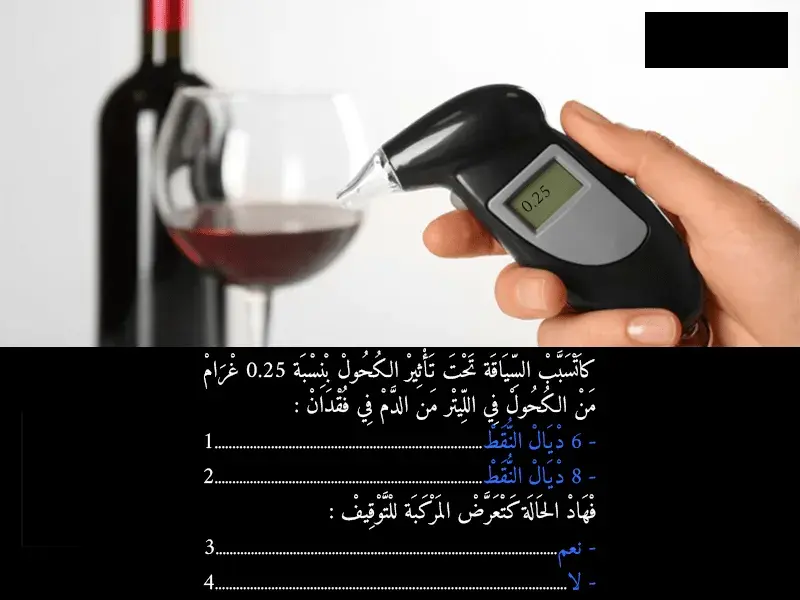
الجواب الصحيح: 1 و 3
السياقة تحت تأثير الكحول بنسبة 0.25 غرام في اللتر من الدم كتعرض السائق لفقدان 6 نقاط من رصيد رخصة السياقة ديالو. بالإضافة لهذا، فهاد الحالة كتعرض المركبة للتوقيف من طرف السلطات، حيث السياقة تحت تأثير الكحول كتشكل خطر كبير على السلامة ديال السائق وباقي مستعملي الطريق. يعاقب بالحبس من ستة (6) أشهر إلى سنة واحدة وبغرامة من خمسة آلاف (5.000) إلى عشرة آلاف (10.000) درهم أو بإحدى هاتين العقوبتين فقط بالإضافة إلى أن المحكمة تأمر بتوقيف رخصة السياقة لمدة تتراوح بين 6 أشهر وسنة واحدة. الجواب الصحيح هو رقم 1 و 3.
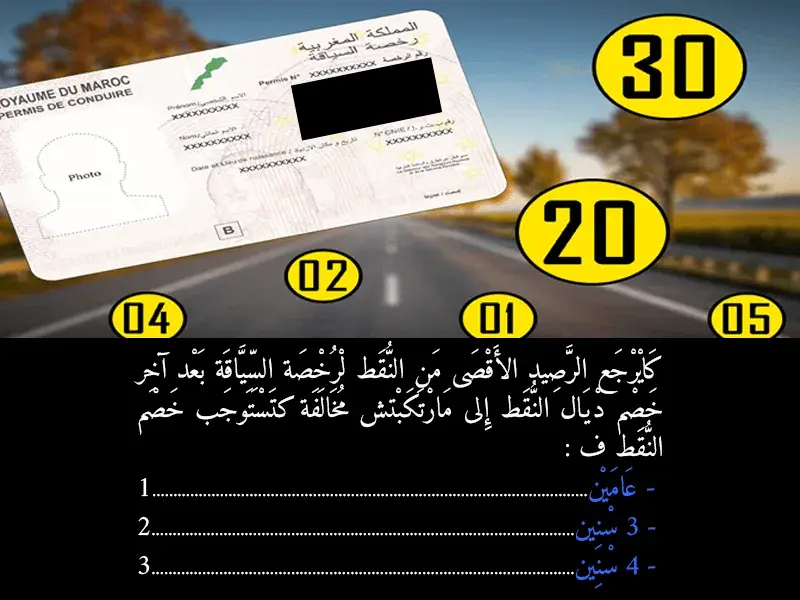
الجواب الصحيح: 2
إذا كان للسائق رصيد يقل عن 8 نقط ولم يرتكب خلال مدة سنتين مخالفة معاقب عليها بخصم النقط يرفع هذا الرصيد إلى اثني عشرة (12 ) نقطة، يسترجع السائق مجموع الرصيد ( 30 نقطة ) إذا لم يرتكب السائق مخالفة معاقب عليها بخصم النقط خلال مدة ثلاث سنوات. الجواب الصحيح هو رقم 2.
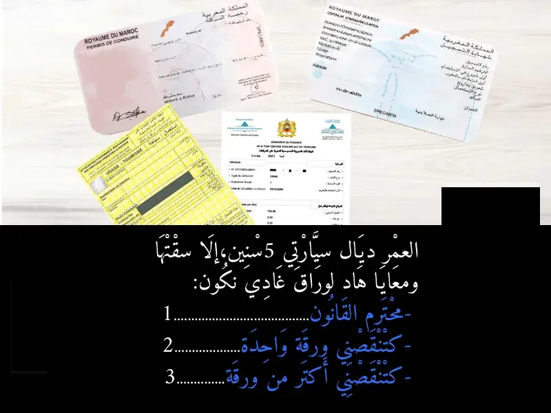
الجواب الصحيح: 2
في الصورة تظهر الوثائق التالية: الضريبة، شهادة التأمين (لونها أصفر)، الورقة الرمادية للسيارة، ورخصة السياقة. لكن بما أن السيارة عمرها الآن 5 سنوات، فنحتاج إلى الوثيقة رقم 5 وهي شهادة الفحص التقني. إذن، في هذه الحالة، تنقصني ورقة واحدة وهي شهادة الفحص التقني. الجواب الصحيح هو رقم 2.
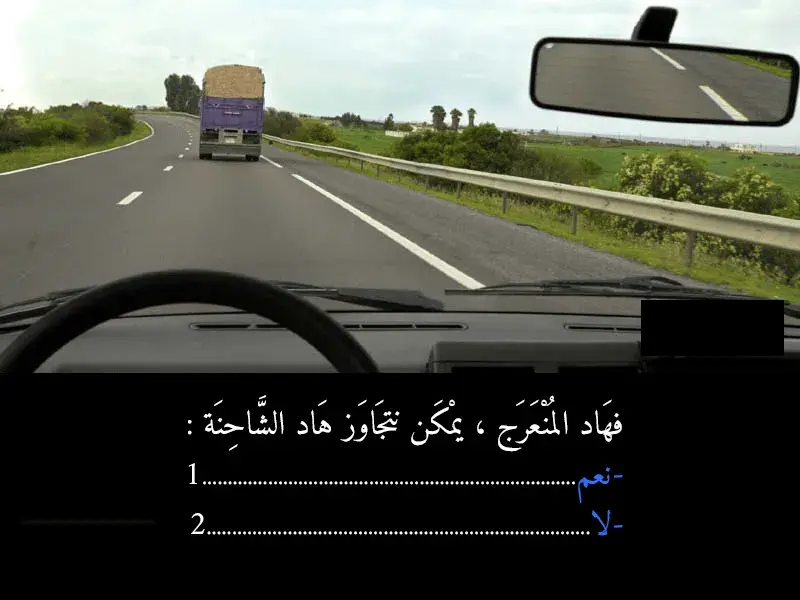
الجواب الصحيح: 1
إذا قمنا بالمراقبة، فإن المرآة الداخلية للسيارة تظهر أنه لا توجد عربات تستعد لتجاوزي. بالنسبة لهذه الطريق، فهي طريق ذات اتجاه واحد، مما يعني أنه لن أصادف عربات قادمة في الاتجاه المعاكس (عرفنا ذلك من خلال الخط المتصل على أقصى اليسار). إذن، في هذه الحالة، بما أنه لا توجد سيارات تستعد لتجاوزي، والطريق ذات اتجاه واحد، والخط متقطع، يمكنني في هذا المنعرج تجاوز هذه الشاحنة. الجواب الصحيح هو رقم 1.
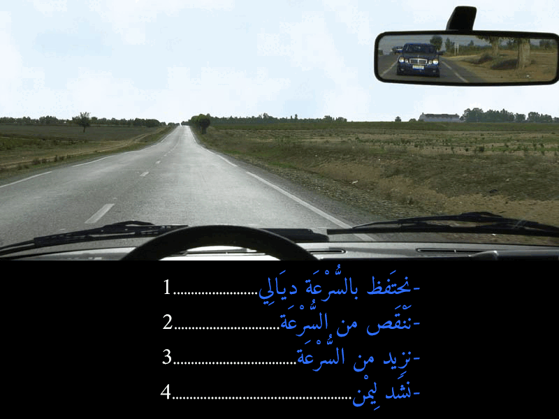
الجواب الصحيح: 1 و 4
توجد سيارة تستعد لتجاوزي من الخلف. عندما تستعد سيارة لتجاوزي، من المهم أن لا أقوم بالزيادة في السرعة ولا بالإنقاص منها، بل أحتفظ بالسرعة التي أسير بها وألتزم اليمين للسماح للسيارة الأخرى بالتجاوز بأمان. إذن، في هذه الحالة، أحتفظ بالسرعة التي أسير بها وألتزم اليمين لضمان سلامتي وسلامة السائق الآخر. الجواب الصحيح هو رقم 1 و 4.
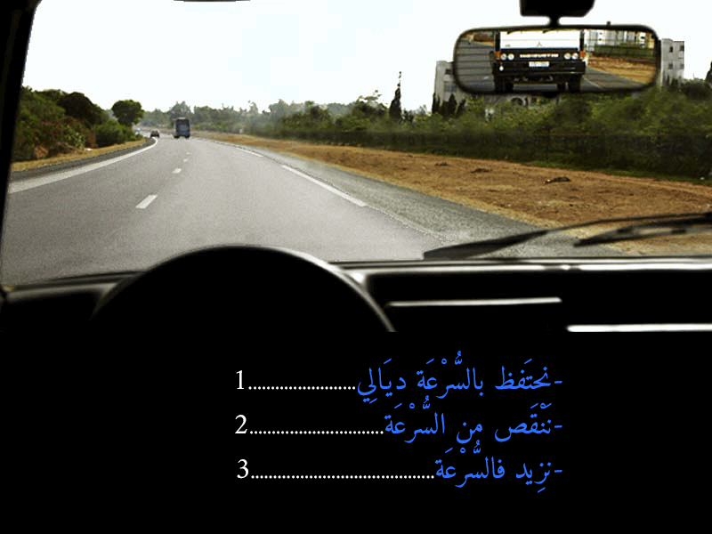
الجواب الصحيح: 1
توجد شاحنة تستعد لتجاوزي من الخلف. عندما تستعد عربة لتجاوزي، من المهم أن لا أقوم بالزيادة في السرعة ولا بالإنقاص منها. بدلاً من ذلك، أحتفظ بالسرعة التي أسير بها وألتزم باليمين للسماح للشاحنة بالتجاوز بأمان. إذن، في هذه الحالة، أحتفظ بالسرعة التي أسير بها وألتزم اليمين لضمان سلامتي وسلامة السائق الآخر. الجواب الصحيح هو رقم 1.
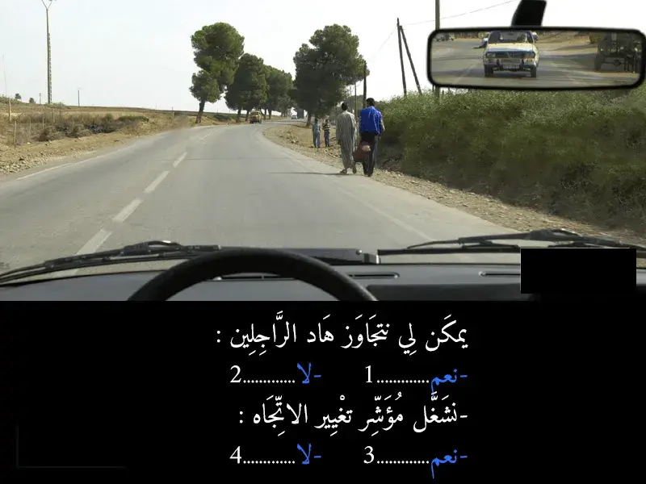
الجواب الصحيح: 2 و 4
لا يمكنني التجاوز في هذه الحالة لعدة أسباب. أولاً، نحن قريبون من منعرج على اليمين، وفي المنعرجات يكون التجاوز ممنوع. ثانياً، هناك شاحنة قادمة من الاتجاه المعاكس، مما يجعل التجاوز خطير. ثالثاً، في المرآة الداخلية، يظهر أن السائق يستعمل يديه للإشارة للتجاوز، وهذا الأمر مسموح به قانونياً في حالة وجود خلل في الإشارات الضوئية (المادة 42 من مدونة السير). المادة 42 تقول أنه في حالة وجود خلل في الإشارات الضوئية، يمكن استعمال الإشارات اليدوية، ويجب أن يكون هذا التنبيه في وقت كافٍ حتى لا يفاجئ باقي مستعملي الطريق بمناورة مشوشة ومخلة بنظام السير. إذن، في هذه الحالة، بما أن هناك عدة عوامل تمنع التجاوز، يجب أن لا أقوم بالتجاوز ولا أشغل مؤشر تغيير الاتجاه بما أنني لن أتجاوز. الجواب الصحيح هو رقم 2 و 4.
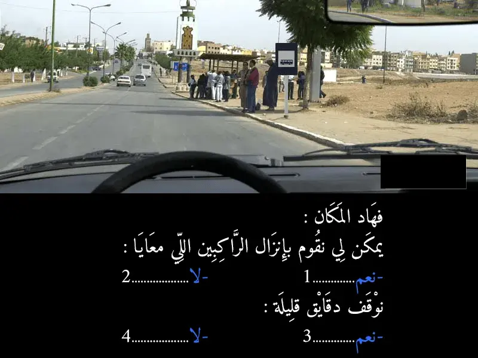
الجواب الصحيح: 2 و 4
عندما أتواجد في مكان خاص، مثل في هذه الحالة في مكان خاص بالحافلات، يكون ممنوع علي الوقوف أو التوقف. في الأماكن الخاصة، لا يمكنني إنزال راكبين ولا يمكنني الوقوف لدقائق قليلة. الجواب الصحيح هو رقم 2 و 4.
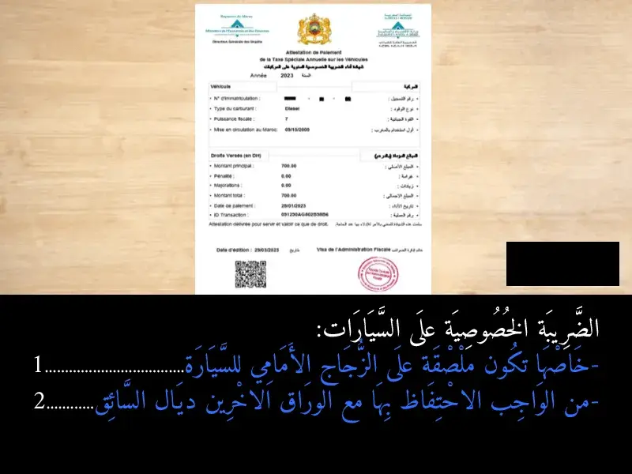
الجواب الصحيح: 2
الضريبة الخصوصية على السيارات، والمعروفة بـ (لافينييت)، ما خاصهاش تكون ملصقة على الزجاج الأمامي للسيارة. من الواجب الاحتفاظ بها مع الوثائق الأخرى ديال السائق داخل السيارة، باش تكون متوفرة عند الحاجة، وخصوصاً عند وجود مراقبة طرقية. الجواب الصحيح هو رقم 2.
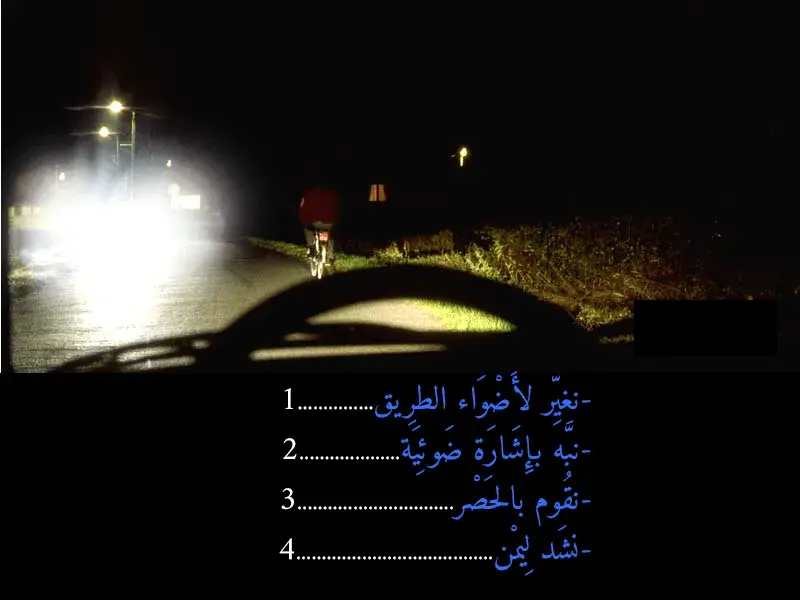
الجواب الصحيح: 2 و 3 و 4
إلى كنت غادي نتقابل مع عربة مستعملة أضواء الطريق، خاصني ننبهها بإشارة ضوئية باش السائق يبدل الأضواء إلى أضواء التقابل، وهادشي كيسهل عملية التقابل بلا إبهار. فهاد الحالة، خاصني نفرمل وننقص السرعة حيت كاين صاحب دراجة نارية على اليمين، وضروري نشد ليمن باش نخلي مسافة أمان كافية. استعمال أضواء الطريق ممنوع أثناء التقابل مع عربة أخرى، حيث كيسبب إبهار للسائق المقابل. إذن، الجواب الصحيح هو 2 و 3 و 4.
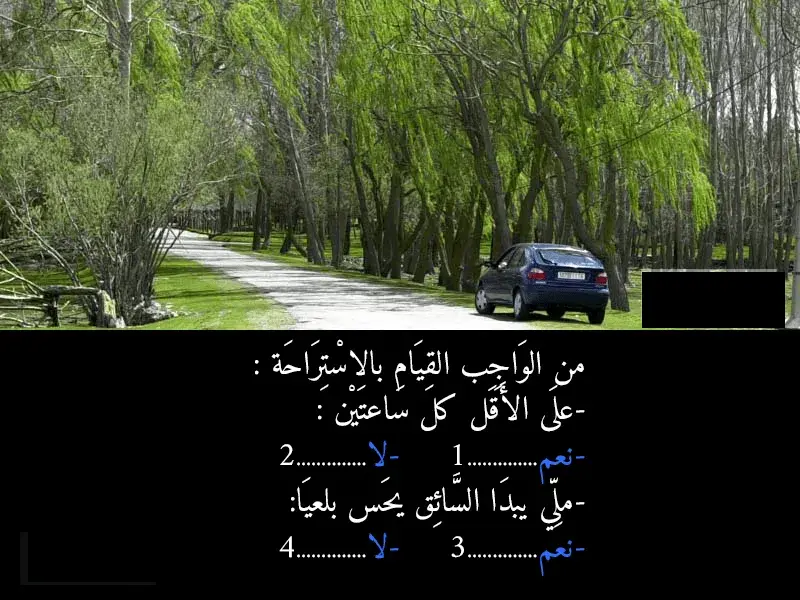
الجواب الصحيح: 1 و 3
من الواجب على السائق القيام بالاستراحة على الأقل كل ساعتين من القيادة المتواصلة، لأن القيادة لفترات طويلة بدون استراحة يمكن أن تؤدي إلى التعب والإرهاق، مما يزيد من خطر وقوع الحوادث. أيضاً، يجب على السائق أن يأخذ استراحة فوراً عندما يبدأ يحس بالتعب، حتى إذا لم يكمل ساعتين من القيادة، لأن التعب يمكن أن يؤثر بشكل كبير على تركيزه واستجابته للمواقف الطارئة على الطريق. الجواب الصحيح هو رقم 1 و 3
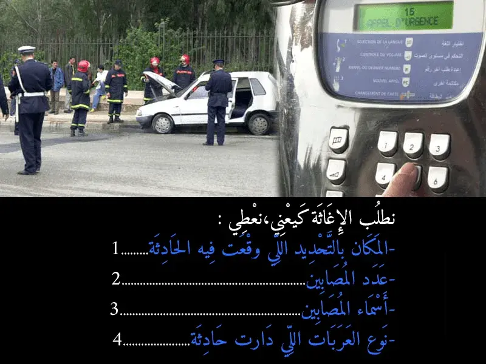
الجواب الصحيح: 1 و 2 و 4
عندما نطلب الإغاثة بعد وقوع حادثة سير، من الضروري إعطاء المعلومات التالية بشكل واضح ودقيق: المكان بالتحديد اللي وقعت فيه الحادثة، عدد المصابين، ونوع العربات اللي دارت حادثة. تحديد الموقع بدقة يمكن فرق الإغاثة من الوصول بسرعة إلى مكان الحادثة، ومعرفة عدد المصابين تساعدهم في تجهيز المعدات والموارد اللازمة، وأخيرًا معرفة نوع العربات تتيح لهم تجهيز الأدوات والمعدات المناسبة للتعامل مع الحادثة. الجواب الصحيح هو رقم 1، 2، و 4.
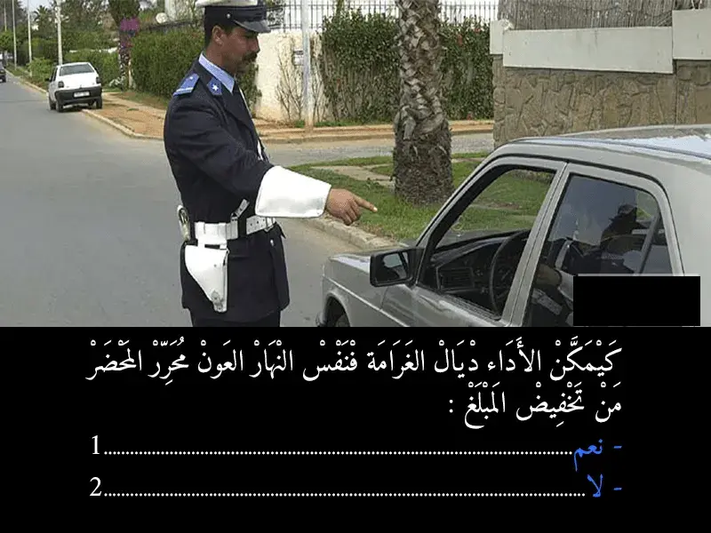
الجواب الصحيح: 1
عندما يقوم السائق بارتكاب مخالفة من الدرجة الأولى، مثل عدم احترام حق الأسبقية، تكون الغرامة الأصلية هي 700 درهم. ولكن يمكن تخفيض هذا المبلغ إذا قام السائق بأداء الغرامة في وقت مبكر. إذا قام السائق بالأداء في أجل 24 ساعة، سيدفع 400 درهم فقط. وإذا دفع الغرامة في أجل أسبوعين، سيدفع 500 درهم. أما إذا انتظر أكثر من أسبوعين ودفع الغرامة خلال مدة تصل إلى 30 يومًا، فسيدفع المبلغ الأصلي الكامل وهو 700 درهم. لذلك، من الأفضل دفع الغرامة في أسرع وقت ممكن للاستفادة من التخفيض. الجواب الصحيح هو رقم 1.
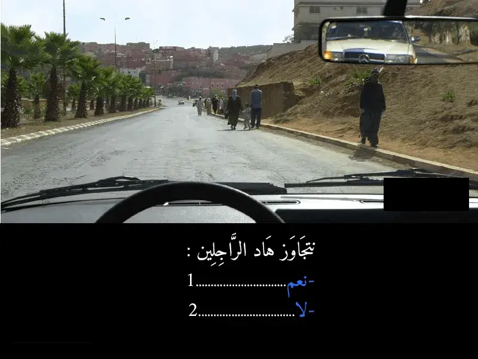
الجواب الصحيح: 2
المرآة الداخلية للسيارة توضّح أن هناك سيارة تستعد لتجاوزي. إذن في هذه الحالة، لا يمكنني تجاوز هؤلاء الراجلين لتجنب حدوث تصادم أو أي حادثة أخرى. الجواب الصحيح هو رقم 2.
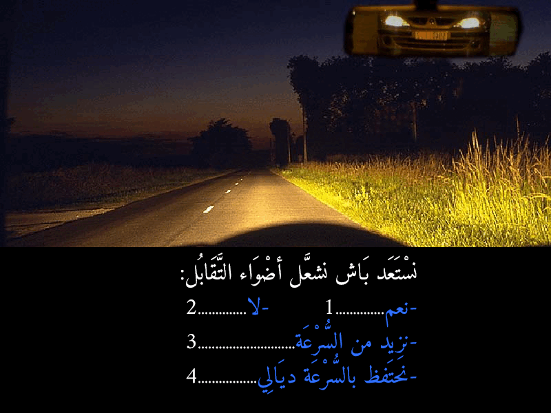
الجواب الصحيح: 1 و 4
نتواجد خارج المدينة ولا توجد إنارات الشّارع ولا توجد عربات أمامي لذلك أنا الآن أسير بأضواء الطّريق. لكن لو لاحظنا في المرآة الدّاخلية للسيّارة، فإنه توجد سيّارة من الخلف تستعد لتجاوزي، وبالتالي ستصبح السيّارة أمامي. في هذه الحالة يجب عليّ الاستعداد لتغيير أضواء الطّريق إلى أضواء التّقابل، لأنه لا يمكنني استعمال أضواء الطّريق. وبما أن السيّارة تستعد لتجاوزي، فالقاعدة تقول: عندما تستعد سيّارة لتجاوزي، يجب عليّ الاحتفاظ بالسّرعة التي أسير بها وعدم زيادة السرعة. الجواب الصحيح هو رقم 1 و 4.
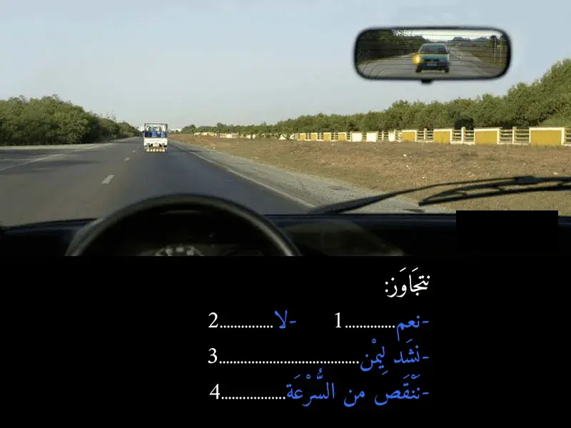
الجواب الصحيح: 2 و 3
ما نلاحظ في المرآة الدّاخلية للسيارة هو أن هناك سيارة تستعد لتجاوزي، إذن لا يمكنني تجاوز العربة التي أمامي. عندما تستعد عربة لتجاوزي، يجب دائماً الاحتفاظ بالسّرعة التي أسير بها (لا أزيد من السّرعة ولا أنقص منها) والالتزام بأقصى اليمين. في هذه الحالة، لا يمكنني التّجاوز ويجب عليّ الالتزام بأقصى اليمين. الجواب الصحيح هو رقم 2 و 3.
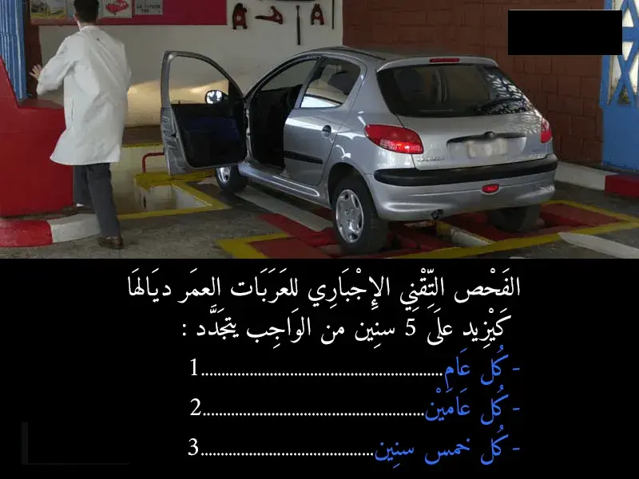
الجواب الصحيح: 1
عندما تكون السّيارة جديدة، لا نقوم بعمل فحص تقني لها حتى يصل عمرها إلى 5 سنوات. وفي تلك اللحظة، عندما يصل عمر السّيارة إلى 5 سنوات، فإنه من الواجب القيام بالفحص التّقني كل عام. الجواب الصحيح هو رقم 1.
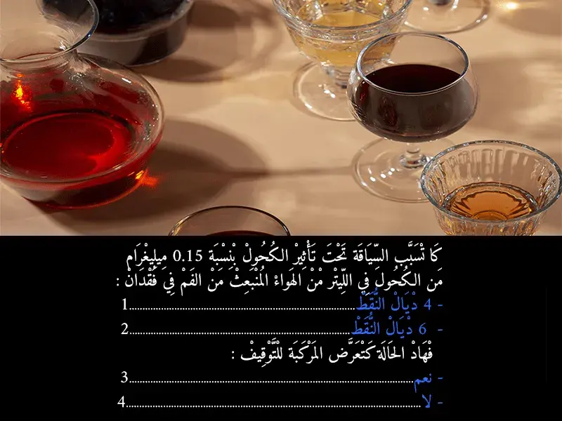
الجواب الصحيح: 2 و 3
السياقة تحت تأثير الكحول أو المخدرات تعتبر جنحة. عند السياقة تحت تأثير الكحول بنسبة 0.15 ميليغرام من الكحول في اللتر من الهواء المنبعث من الفم، فإن ذلك يؤدي إلى خصم 6 نقاط من رصيد رخصة السياقة. بالإضافة إلى ذلك، يتم توقيف العربة لأن السائق يكون في حالة سكر ولا يمكنه القيادة بأمان. في هذه الحالة، يُعتبر السائق غير مؤهل للقيادة ويتم توقيف المركبة لحمايته وحماية الآخرين على الطريق. كما يعاقب بالحبس من ستة 6 أشهر إلى سنة واحدة وبغرامة من خمسة آالف 5.000 إلى عشرة آالف 10.000 درهم أو بإحدى هاتين العقوبتين فقط، كل شخص يسوق مركبة، ولو لم تكن تظهر عليه أية عالمة سكر بين، مع وجوده في حالة سكر، أو تحت تأثير الكحول يثبت من وجود نسبة من الكحول، تحددها اإلدارة، في الهواء المنبعث من فم السائق أو من وجودها في دمه، أو يسوق مركبة مع وجوده تحت تأثي ر المواد المخدرة أو بعض األدوية التي تحظر السياقة بعد تناولها . تأمر المحكمة بتوقيف رخصة السياقة لمدة تتراوح بين 6 أشهر وسنة واحدة إذن، الجواب الصحيح هو رقم 2 و3.
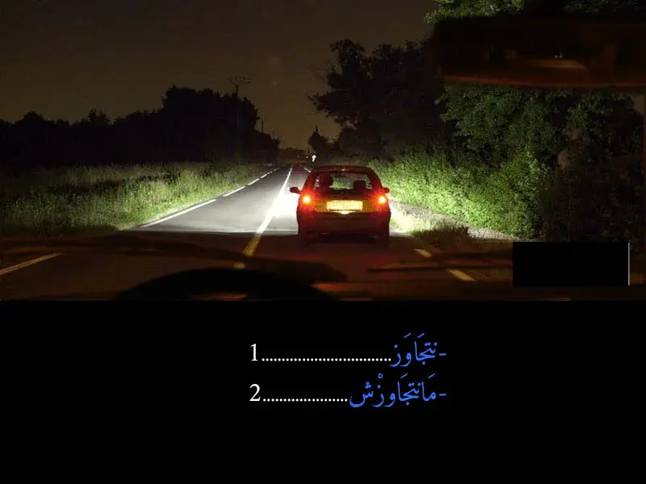
الجواب الصحيح: 2
كما نلاحظ فإن التّشوية الأفقي الخط المتصل يمنعنا من عملية التجاوز. الخط المتصل في التشوير الأفقي يعني أنه لا يمكنني التجاوز. لذلك، يجب عليّ الانتظار حتى يكون التجاوز مسموحًا. الجواب الصحيح هو رقم 2.
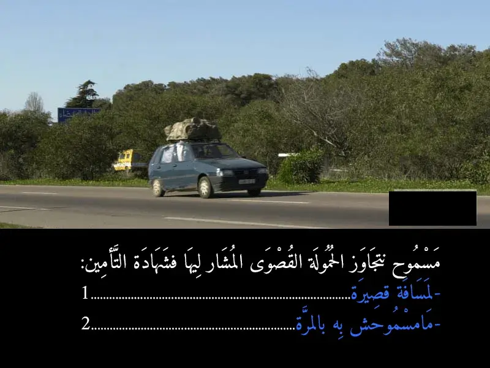
الجواب الصحيح: 2
تجاوز الحمولة القصوى المشار إليها في شهادة التأمين غير مسموح به على الإطلاق، حتى لو كانت المسافة قصيرة. الجواب الصحيح هو رقم 2، مَامْسْمُوحْشْ بِهِ بالْمَرَّة. الجواب الصحيح هو رقم 2.
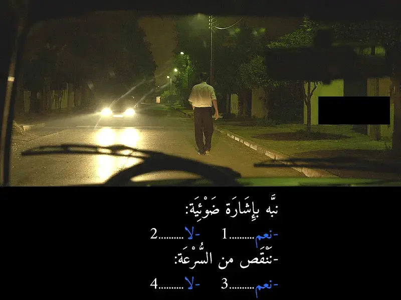
الجواب الصحيح: 1 و 3
في هاد الحالة، تنبه بإشارة ضوئية باش تنبه الراجل اللي كيسير قدامك، حيت ما كيمكنش تستعمل المنبه الصوتي على الراجلين. وهاد الإشارة الضوئية كتخلي حتى السيارة اللي جاية من الاتجاه المعاكس تبدل أضواء الطّريق لأضواء التّقابل. ودائما إلى كان شي خطر قدامك، بحال الراجل اللي كيسير على الطريق، خاصك تنقص من السرعة. إذن هنا، الجواب الصحيح هو رقم 1 و3.
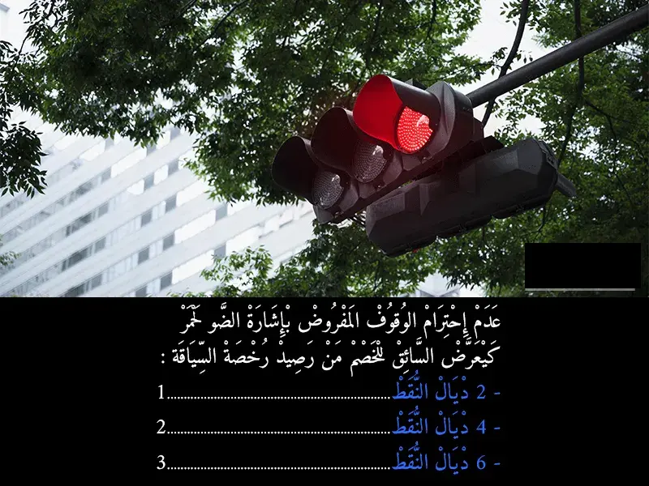
الجواب الصحيح: 2
عدم إحترام الوقوف المفروض باشارة الضوء الأحمر يعتبر مخالفة من الدرجة الأولى. إلى ما احترمتيش الوقوف المفروض بإشارة الضوء الأحمر، كيخصموا ليك 4 ديال النقاط من رصيد رخصة السياقة ديالك. الغرامة هي 400 درهم إلا خلصتيها فـ 24 ساعة، وكتولي 500 درهم إلا خلصتيها فـ أجل أسبوعين، وكتوصل لـ 700 درهم إلا خلصتيها فـ أجل 30 يوم. الجواب الصحيح هو رقم 2.
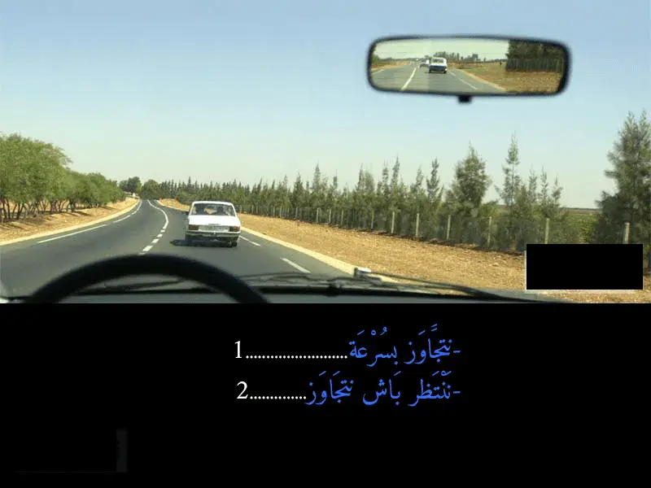
الجواب الصحيح: 2
كما نلاحظ فإن التشوير الأفقي الخط المتقطع سوف يصبح متصل، لذلك لا يمكنني التجاوز بسرعة، ويجب علي الانتظار حتى يكون الخط متقطع وآمن. ماكانش شي حاجة سميتها نتجاوز بسرعة. الجواب الصحيح هو رقم 2.
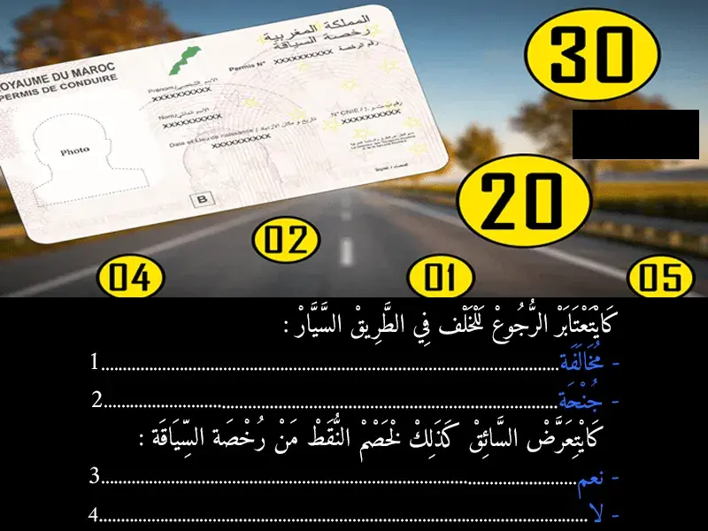
الجواب الصحيح: 2 و 3
يُعتَبر الرجوع إلى الخلف في الطريق السيار جنحة، ويُعاقَب السائق بغرامة تتراوح بين أربعة آلاف (4,000) وثمانية آلاف (8,000) درهم، بالإضافة إلى توقيف رخصة السياقة لمدة تتراوح بين شهر وثلاثة أشهر. كما يتم خصم 3 نقاط من رصيد رخصة السياقة. الجواب الصحيح هو رقم 2 و3.
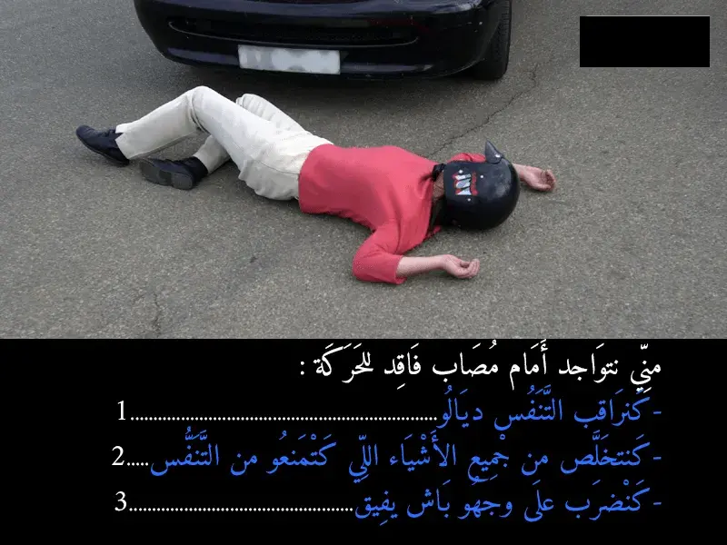
الجواب الصحيح: 1 و 2
عندما تتواجد أمام مُصاب فاقد للوعي، من الضروري أن تقوم بمراقبة تنفسه والتأكد من عدم وجود أي عوائق تمنعه من التنفس. يجب التخلص من جميع الأشياء التي قد تمنعه من التنفس والتأكد من أن مجرى الهواء مفتوح. بالإضافة إلى ذلك، يجب عدم ضرب وجه المصاب حتى يفيق. قد يتسبب ذلك في المزيد من الضرر، خاصة إذا كان يعاني من إصابة في الرأس أو العنق. بدلاً من ذلك، يجب التركيز على تأمين مجرى الهواء ومراقبة تنفسه وانتظار وصول المساعدة الطبية. الضرب ليس إجراءً صحيحًا في هذه الحالة. الجواب الصحيح هو رقم 1 و 2.
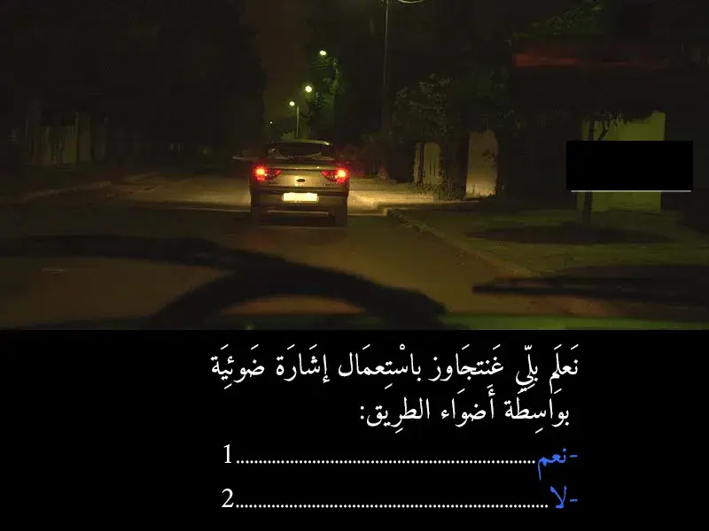
الجواب الصحيح: 1
عندما أرغب في تجاوز عربة تسير أمامي، أبدأ بالتحقق من الوضع باستخدام المرايا للتأكد من عدم وجود عربات تحاول تجاوزي من الخلف أو أي عوائق أمامي. ثم، أستخدم أضواء الطريق لفترة قصيرة لتنبيه العربة الأمامية بنيتي في التجاوز. بعد ذلك، أشغل مؤشر الانعطاف على اليسار. إستعمال أضواء الطّريق مسموح به داخل التجمعات العمرانية بنية التجاوز يعني نخدمو في جزء من الثانية باش نبه السائق انني غادي نتجاوزو. الجواب الصحيح هو رقم 1.
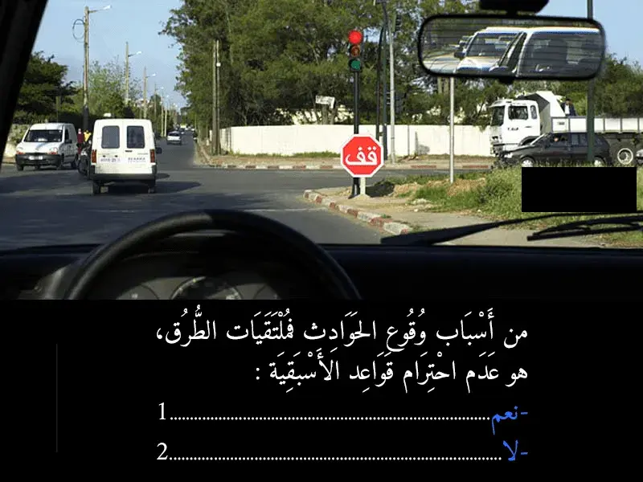
الجواب الصحيح: 1
في ملتقيات الطرق، من الأسباب الرئيسية لوقوع الحوادث هو عدم احترام قواعد الأسبقية. هذا يعني أن السائقين لا يلتزمون بالتوقف عند إشارات (قف) أو لا يعطون حق الأسبقية للعربات القادمة من الاتجاهات الأخرى. هذا التصرف يؤدي إلى تصادمات وحوادث خطيرة. لذا، من الضروري دائمًا احترام إشارات المرور وقواعد الأسبقية لضمان سلامة الجميع على الطريق. الجواب الصحيح هو رقم 1.
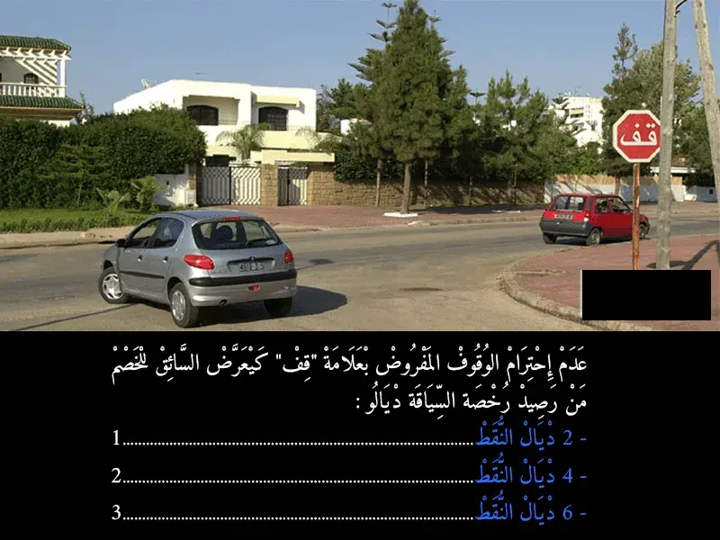
الجواب الصحيح: 2
عدم احترام الوقوف المفروض بعلامة (قف) يعتبر مخالفة من الدرجة الأولى، حيث يتم خصم 4 نقاط من رصيد رخصة السياقة. الغرامة المالية تكون 400 درهم إذا تم تسديدها في 24 ساعة، وترتفع إلى 500 درهم إذا تم تسديدها في أجل أسبوعين، وتصل إلى 700 درهم إذا تم تسديدها في أجل 30 يوم. الجواب الصحيح هو رقم 2.
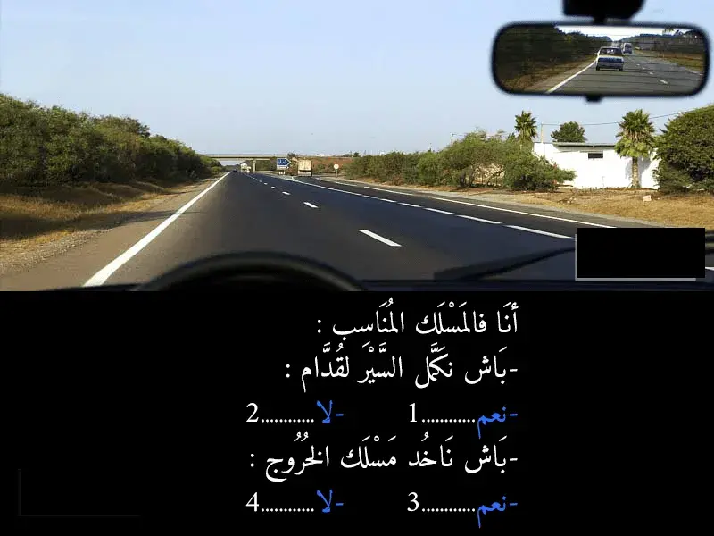
الجواب الصحيح: 2 و 4
أنا لا أتواجد في المسلك المناسب لإكمال السير للأمام. المسلك الموجود على اليسار، والذي أتواجد فيه الآن، هو مسلك التجاوز وأقوم باستعماله أثناء عملية التجاوز لعربة. وبما أنني لا أقوم بتجاوز عربة الآن، فيجب عليّ أن أسير في المسلك المتواجد على اليمين لأنه المسلك الخاص بالسير العادي. بالإضافة إلى ذلك، أنا لا أتواجد في المسلك المناسب لأخذ مسلك الخروج، لأن مسلك الخروج هو المسلك المتواجد على أقصى اليمين. الجواب الصحيح هو رقم 2 و 4.
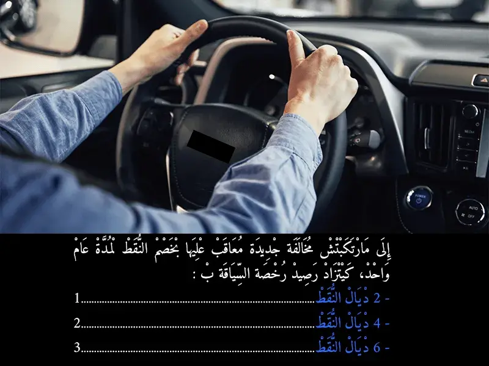
الجواب الصحيح: 2
إذا ما دارش صاحب رخصة السياقة مخالفة تتعاقب بخصم النقاط في مدة عام من النهار اللي تلقى فيه آخر حكم قضائي، أو من نهار خلص فيه آخر غرامة، غادي يسترجع 4 نقاط. الجواب الصحيح هو رقم 2.
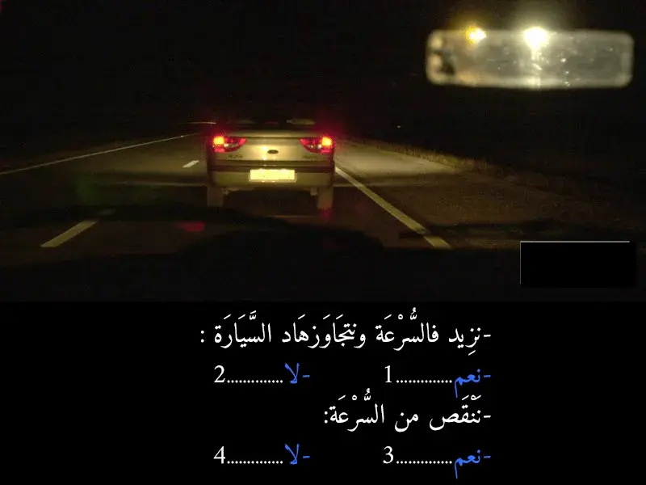
الجواب الصحيح: 2 و 4
في الصورة نلاحظ من المرآة الداخلية للسيارة وجود سيارة خلفنا تستعد للتجاوز وقد شغلت مؤشر تغيير الاتجاه. يتعين علينا الانتباه جيدًا والحفاظ على السرعة الحالية دون زيادة أو نقصان، والالتزام بالجانب الأيمن من الطريق. لذا، لا ينبغي لنا زيادة السرعة لتجاوز السيارة أمامنا ولا تقليلها، مع الحرص على الانتباه دئاما خصوصا خلال الفترة الليلية. الجواب الصحيح للسؤال في الصورة هو رقم 1 و2.
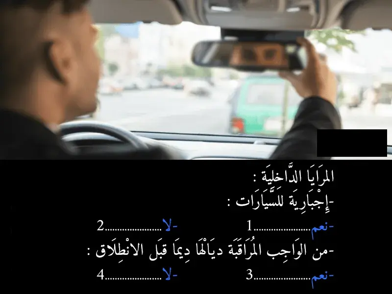
الجواب الصحيح: 1 و 3
المرايا الداخلية إجبارية لكل سيارة وتساعد السائق على رؤية ما يحدث خلفه، مما يزيد من السلامة على الطريق. من الضروري دائمًا التحقق من وضعية وضبط المرايا قبل بدء القيادة لضمان رؤية واضحة وخالية من العوائق. هذا يساهم في تجنب الحوادث خاصة عند تغيير المسارات أو التجاوز. الجواب الصحيح هو رقم 1 و 3.
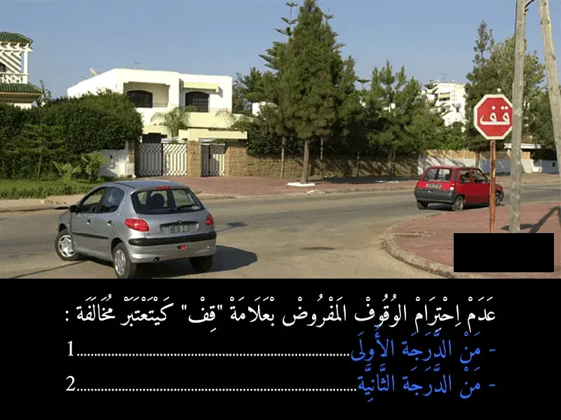
الجواب الصحيح: 1
عدم احترام الوقوف المفروض بعلامة (قف) يعتبر مخالفة من الدرجة الأولى، حيث يتم خصم 4 نقاط من رصيد رخصة السياقة. الغرامة المالية تكون 400 درهم إذا تم تسديدها في 24 ساعة، وترتفع إلى 500 درهم إذا تم تسديدها في أجل أسبوعين، وتصل إلى 700 درهم إذا تم تسديدها في أجل 30 يوم. الجواب الصحيح هو رقم 1.
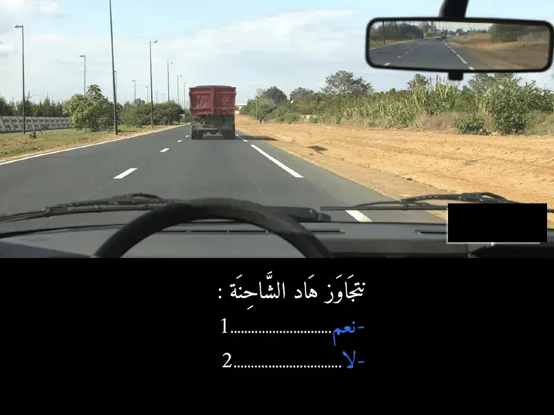
الجواب الصحيح: 1
كما نلاحظ، فإن المرآة الداخلية للسيارة تظهر أنه لا توجد عربة تستعد لتجاوزي. التشوير الأفقي بالخط المتقطع يسمح لي بعملية التجاوز، إضافة إلى أن الطريق ذات اتجاه واحد، مما يعني أنه لن ألتقي بعربات قادمة من الاتجاه المعاكس (نعرف هذا لأن الخط المتصل في أقصى اليسار يشير إلى أن الطريق ذات اتجاه واحد). إذن، في هذه الحالة يمكنني تجاوز هذه الشاحنة بأمان. الجواب الصحيح هو رقم 1.
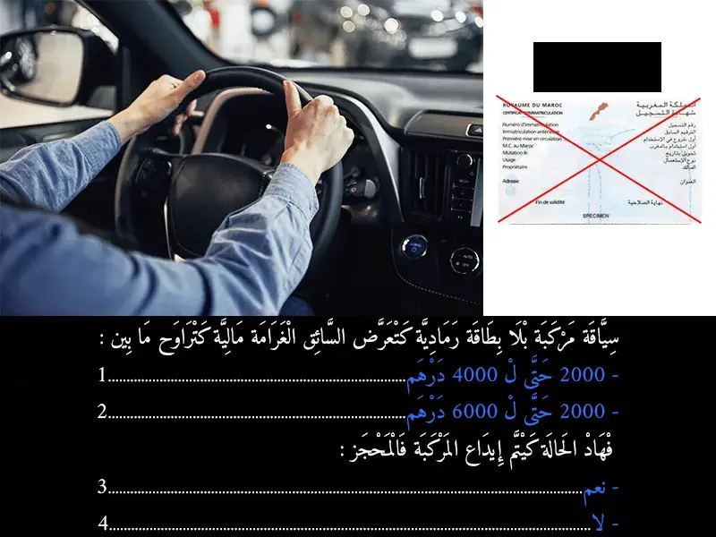
الجواب الصحيح: 2 و 3
يعاقب بغرامة من ألفين (2.000) إلى ستة آلاف (6.000) درهم. كل من استخدم مركبة خاضعة للتسجيل أوخاضعة لسند الملكية دون الحصول على شهادة التسجيل أوعلى سند الملكية. وتودع المركبة المعنية في المحجز إلى حين جعلها مطابقة لأحكام هذا القانون والنصوص الصادرة لتطبيقه. إذا تعذرت المطابقة المذكورة، أمرت المحكمة بمصادرة المركبة لفائدة الدولة. الجواب الصحيح هو رقم 2 و 3.
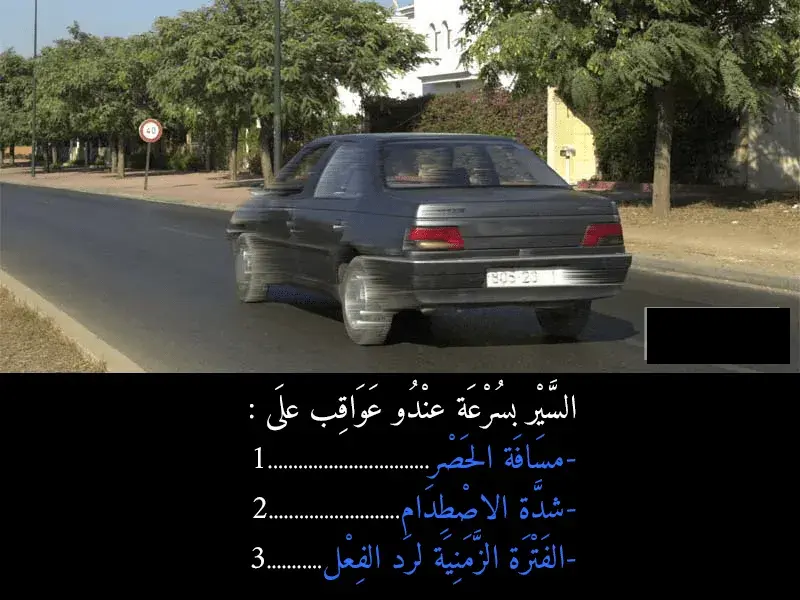
الجواب الصحيح: 1 و 2
السير بسرعة عالية يزيد من مسافة الحصر (التوقف)، حيث يحتاج السائق إلى مسافة أطول للتوقف تمامًا بعد الضغط على الفرامل، كما تزيد السرعة من شدة الاصطدام في حالة وقوع حادث، مما يزيد من خطورة الإصابات والأضرار المادية. الفترة الزمنية لرد الفعل تكون ثابتة تقريبًا بغض النظر عن السرعة، ولكن ما يتغير هو المسافة المقطوعة خلال هذا الوقت، لذا لا يؤثر السير بسرعة على الفترة الزمنية لرد الفعل نفسها، ولكنه يزيد من مسافة التوقف. الجواب الصحيح هو رقم 1 و2.
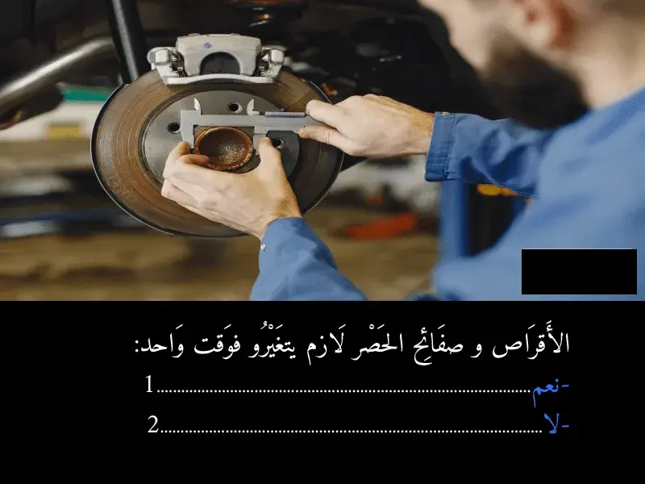
الجواب الصحيح: 2
الأقراص وصفائح الفرامل لا يتغيرون في نفس الوقت دائمًا. الصفائح تتعرض للاهتراء بشكل أسرع من الأقراص، لذلك تحتاج إلى استبدالها بشكل متكرر. الأقراص قد تستمر لفترة أطول ولكن يجب فحصها بانتظام للتأكد من سلامتها. إذن الجواب الصحيح هو رقم 2.